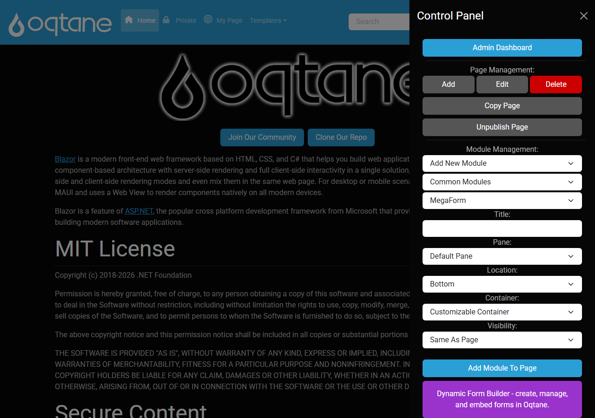
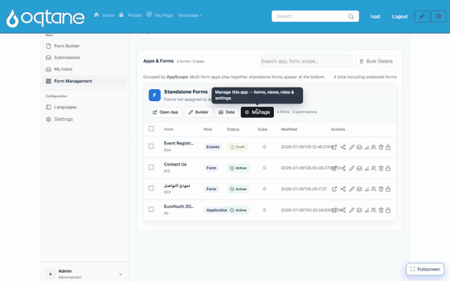

From a blank page to a working form
This walkthrough goes end-to-end on Oqtane: start on an empty page, add the MegaForm module, let the AI build a product feedback form with display logic, and finish with the form running live — where a low rating reveals a follow-up question.
1. Add the MegaForm module to a page
Already have the form? You do not need to place an empty module first. In Admin → MegaForm, the Add To Page button on any form lets you pick the page and the pane directly — see Create a Form on Oqtane. The walkthrough below is the other direction: start with an empty module on a page, then build the form into it with AI.
On any page, open Oqtane's Control Panel (the ⚙ in the top bar, in edit mode). Under Module Management, choose MegaForm and click Add Module To Page:

An empty MegaForm module appears on the page, ready to fill with a form.
2. Build the form with AI — including display logic
Open the module's Form Dashboard and click ✨ Create with AI (or use the AI bubble in the Form Builder). Describe the form and the conditional behaviour you want — the assistant generates the fields and the display logic, then you Save & Use Now to make it live:

"A product feedback form: a star rating 'How would you rate our product?', and a comment box 'What could we improve?' that only appears when the rating is 3 stars or lower. Include name and email."
3. Display logic (conditional visibility)
The example above asks the AI to make one field conditional — the "What could we improve?" box only shows when the rating is low. On the finished form:
- Rate 4–5 stars → the comment box stays hidden.
- Rate 1–3 stars → the comment box appears.
You can add or change this yourself in the Form Builder: select a field, turn on "Only show when…", and add a condition (e.g. rating is less than 4). Conditions can combine multiple rules with And / Or, and the same engine can also make fields required or set values based on other answers. The rules run in the live form instantly — no page reload.
4. The result: a working form
The finished feedback form is live on the page, collecting submissions into Submissions & My Inbox. From here you can theme it, translate it, add a workflow, or connect it to storage — all covered in the rest of this guide.